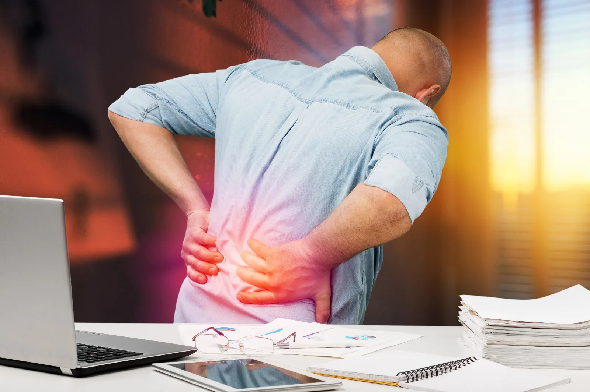
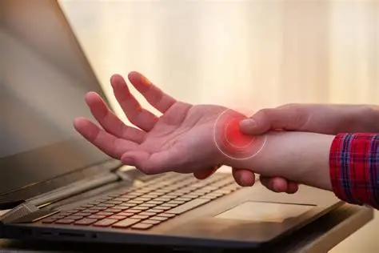
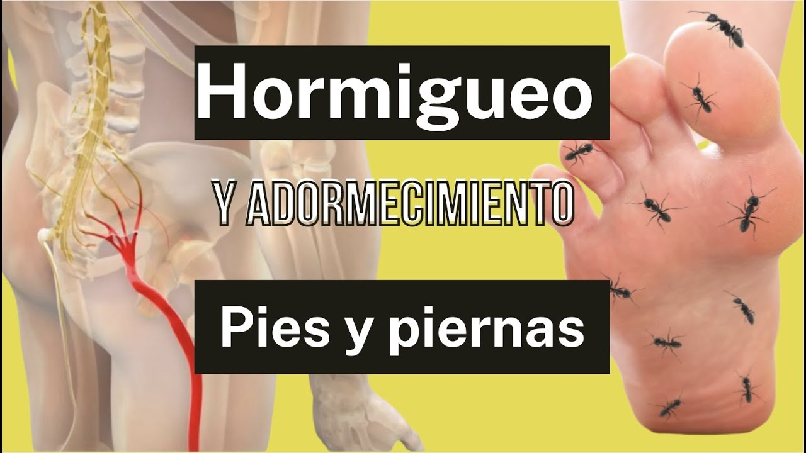

Trastornos Físicos
Derivados del trabajo en el sector informático. El uso prolongado de ordenadores puede generar trastornos musculoesqueléticos que afectan principalmente a la espalda, cuello, hombros, brazos, muñecas y piernas.

Dolor de cuello
Aparece cuando el trabajador mantiene el cuello girado, flexionado o extendido durante largos periodos.
Causas frecuentes:- Pantallas colocadas demasiado altas o bajas.
- Monitores situados a un lado, obligando a girar la cabeza.
- Posturas mantenidas sin descanso.
Hombros y Espalda Alta
Relacionadas con la tensión de la musculatura de la cintura escapular (hombros elevados o en tensión).
Suelen aparecer cuando:- No se apoyan los antebrazos al teclear o usar el ratón.
- La mesa está demasiado alta, obligando a elevar los hombros.

Zona Lumbar y Dorsal
La postura sentada durante muchas horas provoca carga en las vértebras, ligamentos y musculatura.
Factores que lo agravan:- Sillas sin apoyo lumbar adecuado.
- Permanecer mucho tiempo sentado sin cambiar de postura.

Manos y Muñecas
Debido al mantenimiento de la muñeca en posiciones forzadas: extendida, flexionada o desviada.
Factores contribuyentes:- Uso repetitivo del ratón (Síndrome del Túnel Carpiano).
- Teclados demasiado altos o inclinados.

Piernas y Circulación
Permanecer sentado mucho tiempo puede provocar entumecimiento y mala circulación.
Ocurre especialmente cuando:- Los pies no apoyan correctamente en el suelo.
- Presión en la parte posterior de las rodillas.

Fatiga General
Mantener una misma postura genera tensión acumulada en espalda, cuello, hombros, brazos y piernas.
En resumen:Se deben a posturas inadecuadas, malas posiciones del equipo y movimientos repetitivos.